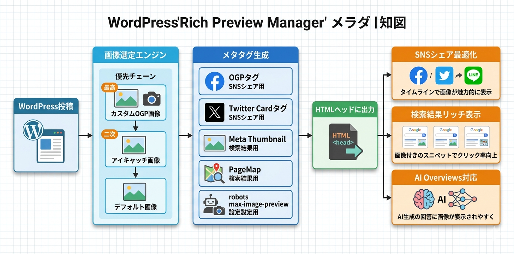

Kashiwazaki SEO Rich Preview Manager マニュアル

SNSシェア時やGoogle検索結果でのリッチプレビュー表示を最適化するプラグインです。
OGP/Twitter Card/Meta Thumbnail/PageMap/robots max-image-previewの5種類のメタタグを一括管理し、ソーシャルメディアや検索エンジンでのコンテンツ表示を包括的に制御します。
主な機能
5種メタタグ出力
OGP/Twitter Card/Meta Thumbnail/PageMap/robots max-image-previewの5種類を一括管理
投稿別カスタマイズ
メタボックスでタイトル・説明・画像・タイプをオーバーライド
画像自動選定
優先順位: カスタム画像→アイキャッチ→デフォルト画像
プラグインの特長
- og:title、og:description、og:image、og:url、og:type などのOGPメタタグを
<head>内に自動出力 - Twitter Card メタタグ（twitter:card、twitter:title、twitter:image など）を自動生成
- Meta Thumbnail メタタグによるSERP画像制御
- PageMap DataObject によるGoogle AI Overviews対応
- robots max-image-preview メタタグの出力
- 投稿編集画面のメタボックスからOGタイトル・説明・画像・タイプ・Twitter Cardタイプを個別にオーバーライド可能
- 画像自動選定: カスタムOGP画像 → アイキャッチ画像 → デフォルト画像の優先順位
- Facebook App ID、Twitterユーザー名のグローバル設定
- 重複メタタグ検出チェッカー機能
- 旧プラグイン（kashiwazaki-seo-ogp-manager v1.x）からのマイグレーション対応
- 投稿タイプごとの出力対象選択
- 34種類以上のカスタムフィルターと17種類以上のアクションフックで開発者による柔軟な拡張に対応
- フロントエンドにCSS・JavaScriptを追加しない（headメタタグのみの出力）

SEO・GEO（生成AI最適化）への効果
OGP → SNS最適化
OGPタグは、Facebook、LINE、はてなブックマークなどのソーシャルメディアでコンテンツが共有された際の表示を制御します。適切なOGPタグを設定することで、シェア時のサムネイル画像・タイトル・説明文が正しく表示され、クリック率（CTR）の向上に貢献します。
Twitter Card → X（旧Twitter）最適化
Twitter Card メタタグを自動生成することで、X上でのリンクシェア時にリッチなカード表示が実現されます。Summary Card with Large Image を使用することで、タイムライン上での視認性が大幅に向上し、エンゲージメントの改善が期待できます。
PageMap → AI Overviews対応
PageMap DataObject を出力することで、Google AI Overviews（旧SGE）がコンテンツのサムネイル画像やメタデータを正確に取得できるようになります。AIによる検索結果表示でサイトの視認性を高め、生成AI時代のSEO（GEO）に対応します。
Meta Thumbnail → SERP画像制御
Meta Thumbnail タグにより、検索結果ページ（SERP）でのサムネイル画像表示を制御します。robots max-image-preview と組み合わせることで、検索結果での画像表示を最大化し、CTRの向上につなげます。
目次（マニュアル構成）
| ページ | 内容 |
|---|---|
| 概要 | プラグインの機能概要、SEO/GEO効果、動作要件 |
| インストール・初期設定 | インストール手順、出力タイプ有効化、Facebook App ID・Twitterユーザー名・デフォルト画像の基本設定 |
| 設定・メタボックス | グローバル設定、投稿別メタボックス、画像優先順位、出力例、フィルター一覧 |
| トラブルシューティング | よくある問題と対処法、重複チェッカー、アーキテクチャ |
動作要件
| 項目 | 要件 |
|---|---|
| WordPress | 6.0 以上 |
| PHP | 7.4 以上 |
| 対応ブラウザ | Chrome、Firefox、Safari、Edge（最新版） |
インストール後すぐに使い始めたい場合は、インストール・初期設定ページに進んでください。